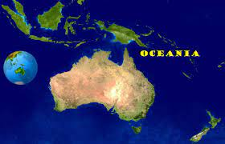

Geografia¶
{kind=link}
L’Oceania è una vasta regione nell’Oceano Pacifico, da molti considerata per convenzione un continente: oltre all’Australia, il vero e proprio continente, essa comprende due grandi isole – Nuova Guinea e Nuova Zelanda – e decine di migliaia di piccole isole.
Deve il suo nome al termine “Oceano”, per il ruolo che il Pacifico assume nell’unire le migliaia di isole che ne fanno parte.
L’Oceania viene chiamata anche “Continente Nuovissimo”, poiché è l’ultimo tra i continenti ad essere stato scoperto dagli europei, nonché l'ultimo ad essere stato popolato dall'uomo.
L’Oceania è il più piccolo dei continenti per terre emerse, ma allo stesso tempo, l’area occupata dalle sue isole è la più vasta di quella di qualsiasi altro continente.
La maggior parte delle terre di questo continente appartiene all’Australia, che a causa delle sue dimensioni viene considerata una massa continentale e non un’isola.
La superficie complessiva delle terre emerse dell’Oceania è di circa 9 milioni di km². Il 99% di tale superficie è costituito da Australia, Nuova Guinea e Nuova Zelanda. Il rimanente 1% è frazionato in oltre 30 000 piccole isole che sono riunite in tre vasti raggruppamenti: Micronesia, Melanesia e Polinesia.
Orografia¶
Le più elevate catene montuose dell’Oceania non si trovano nella terraferma continentale, cioè in Australia, ma nelle tre maggiori isole: Nuova Guinea, Isola del Nord e Isola del Sud.
La catena che raggiunge le maggiori altitudini è quella della Nuova Guinea. Ne fanno parte le più alte vette del continente: il Puncak Jaya o Carsztens (4 884 m) ed il Monte Wilhelm (4 509 m).
Vengono poi le Alpi Neozelandesi, che percorrono le due isole dell'omonimo arcipelago. Infine vi sono le Alpi Australiane, che costeggiano la costa orientale dell'Australia.
Bisogna segnalare che anche montagne isolate e massicci presenti nelle isole minori raggiungono altezze elevate. Ad esempio il vulcano Mauna Kea, nell'Isola di Hawaii raggiunge i 4 205 metri.
Idrografia¶
L’Oceania è un continente ricco di risorse idriche. I fiumi più importanti sono il fiume Darling e il fiume Murray, confluenti, entrambi situati in Australia. Entrambi formano un unico sistema fluviale il maggiore per lunghezza di tutta l’Oceania.
Il lago principale è il Lago Eyre, anch'esso situato in Australia.
Temperatura¶
Per quanto riguarda il clima che caratterizza l’Oceania, i contrasti termici maggiori si hanno nelle regioni dell’interno australiano, caratterizzate da un clima continentale con forti escursioni termiche durante l’anno e scarse precipitazioni.
La maggior parte delle isole è invece caratterizzata da un clima caldo e umido con escursione termica molto ridotta e precipitazioni distribuite nel corso dell'anno. Il clima caldo è mitigato dalla presenza del mare, dai venti e da abbondanti precipitazioni.
La Nuova Zelanda e le coste dell’Australia sud orientale presentano invece un clima temperato mitigato dall'influenza dell'oceano.
Popolazione¶
L’Oceania è la parte del mondo meno popolata con una densità di 3 abitanti per Kmq. Inoltre la popolazione non è distribuita in modo omogeneo.
In Oceania ci sono molte razze di cui le più importanti sono l’australiana, tasmaniana e la melanesiana che sono tra le razze più primitive.
Lingua e religione¶
La religione più professata è il cristianesimo mentre la lingua più parlata è l’inglese.
Attività¶
L’agricoltura ha avuto un notevole sviluppo dopo le forti emigrazioni dall’Europa.
I prodotti principali sono il frumento, la frutta, la canna da zucchero e gli agrumi.
Dalle foreste tropicali si ricavano legni duri molto pregiati.
Importanza fondamentale riveste l’allevamento soprattutto ovino e di conseguenza la produzione di lana e le industrie ad essa collegate.
Per quanto riguarda i prodotti minerari i principali sono l’oro, il piombo, lo zinco, l’uranio, il carbone, il petrolio ed i gas naturali e la bauxite; il ferro ed il nickel si trovano principalmente in Australia e Nuova Caledonia, il rame e l’argento in Nuova Guinea, ed infine i fosfati a Nauru.
Le attività industriali sono in continuo sviluppo specialmente in Australia, con importanti impianti siderurgici e chimici ed in Nuova Zelanda dove riveste grossa importanza l’industria alimentare.